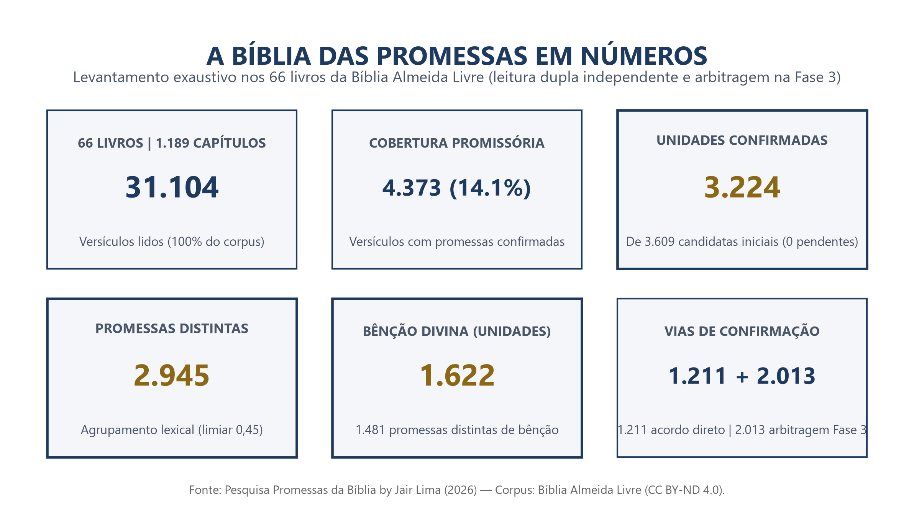
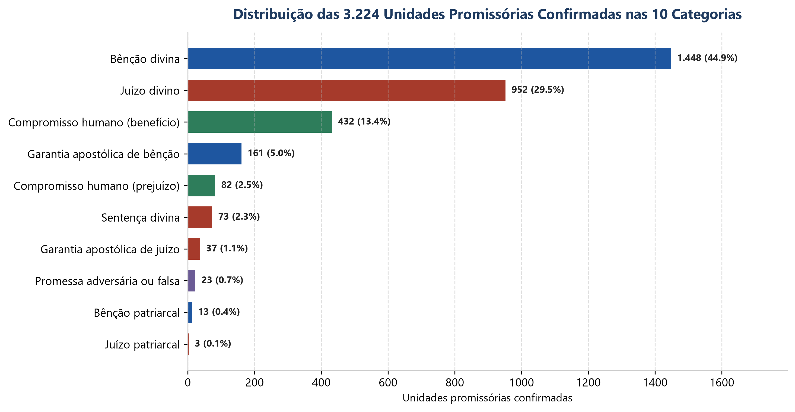
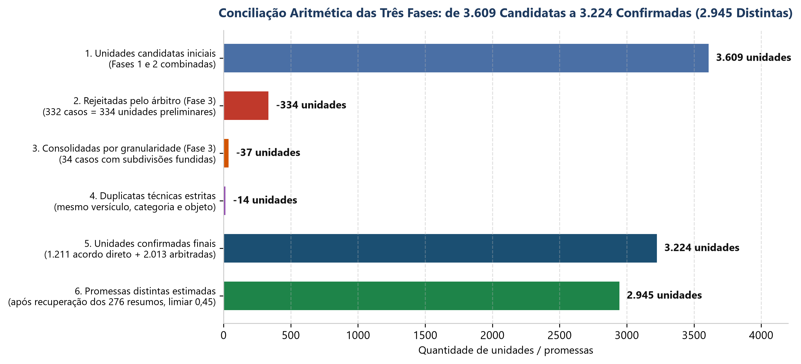
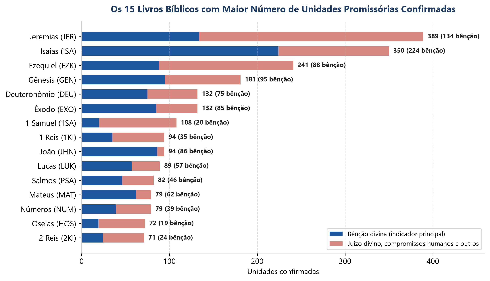
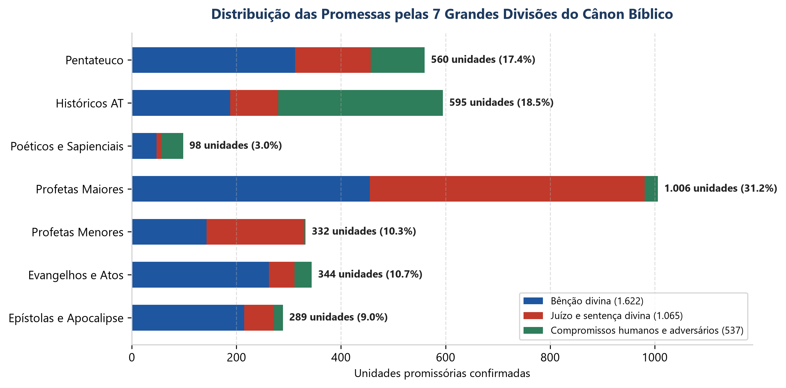
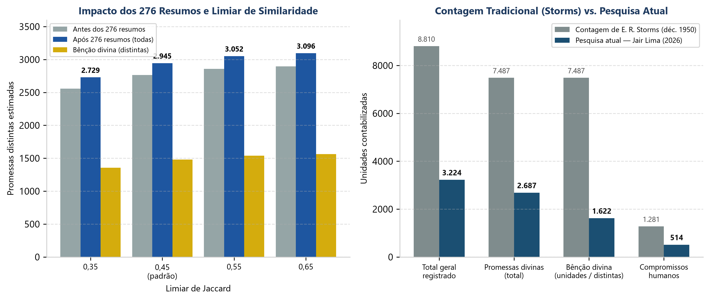

Consulta Interativa às 3.224 Unidades Promissórias Confirmadas
| ID | Referência | Categoria | Objeto Prometido (Resumo Exegético) | Promitente (e Comunicador) | Destinatário | Via de Confirmação | Cap. no Livro |
|---|
Painel Visual e Conciliação Metodológica das Três Fases






Sobre o Livro Comercial e Como Citar a Pesquisa Científica
Esta base científica fundamenta o livro As 3 Mil Promessas da Bíblia: Da criação à eternidade: a história de um Deus que cumpre sua Palavra, de Jair Lima (Lima Editora do Brasil, 2026, 7 partes, 53 capítulos). O texto narrativo e exegético do livro é uma obra comercial protegida por direitos autorais e não é distribuído gratuitamente neste repositório; aqui estão integralmente abertos (CC BY 4.0) todos os dados científicos, catálogos, scripts de validação e evidências de arbitragem para verificação acadêmica.
LIMA, Jair. Quantas promessas existem na Bíblia? Uma análise computacional e exegética dos 66 livros do cânon protestante (Dataset & Catálogo v1.0.0 — 3.224 unidades confirmadas / 2.945 promessas distintas). Três Coroas: Lima Editora do Brasil, 2026. Corpus: Bíblia Almeida Livre (CC BY-ND 4.0).